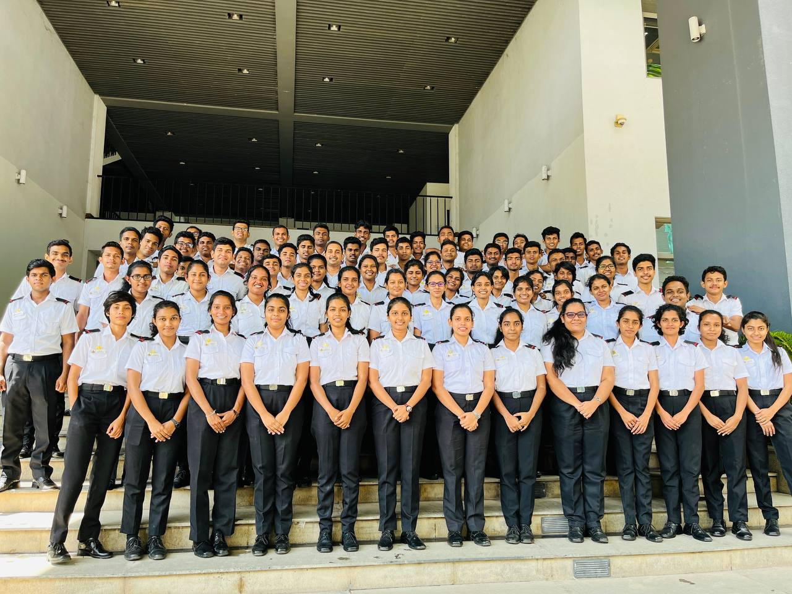

About Me
Editior & Designer
Here is more information about me.
Here I am proactive and energetic with a focus on using computer science training to build my professional foundation. Looking for
opportunities to go beyond basic course material and gain deeper
understanding or hands-on experience.I also have the following skills.
Researched topics outside of class to learn additional information and ask more knowledgeable questions.
Teaching struggling students to improve understanding and performance in computer science.
Ask intelligent questions during class discussions, contribute to group learning.